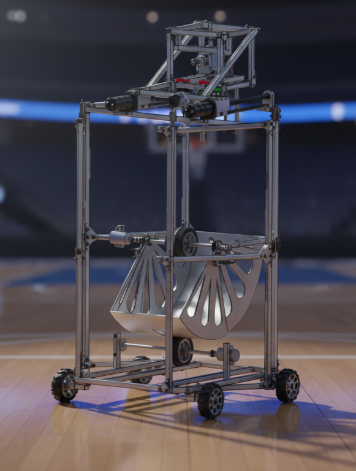

{kind=link}

DD ROBOCON 2025
Role: Design Lead – Mechanical Team
Team Size: 27 Members
Domain: Robotics
Role: Design Lead – Mechanical Team
Team Size: 27 Members
Domain: Robotics
Led the mechanical design and development of two basketball-playing robots for DD Robocon 2025. The project involved designing reliable mechanisms for ball collection, dribbling, shooting, locomotion, and structural integration while coordinating design, manufacturing, assembly, and testing within strict competition constraints.
DD Robocon 2025 required autonomous and manual robots capable of collecting basketballs, dribbling, passing, and accurately scoring within a limited match duration.
The challenge was to develop robust mechanical systems capable of repeatable performance under dynamic competition conditions while remaining manufacturable, lightweight, and serviceable.
As Design Lead, I was responsible for leading the mechanical design activities across the project.
My responsibilities included:
The game rules, field dimensions, robot constraints, and scoring strategy were analysed to identify mechanical requirements for mobility, ball handling, shooting accuracy, and reliability.
The robot architecture was divided into major mechanical subsystems:
Mechanical development focused on designing modular mechanisms that could be independently manufactured, assembled, and serviced.
Major design activities included:
Complete robot assemblies were developed using SOLIDWORKS.
The CAD workflow included:
Mechanical components were manufactured using CNC machining, laser cutting, sheet metal fabrication, and additive manufacturing.
Prototype testing focused on:
Testing feedback was incorporated through multiple design iterations before competition.
Leading the mechanical design of a multidisciplinary robotics project strengthened my ability to convert competition requirements into practical engineering solutions while balancing manufacturability, reliability, rapid iteration, and team coordination.
{kind=link}
{kind=link}
{kind=link}
{kind=link}